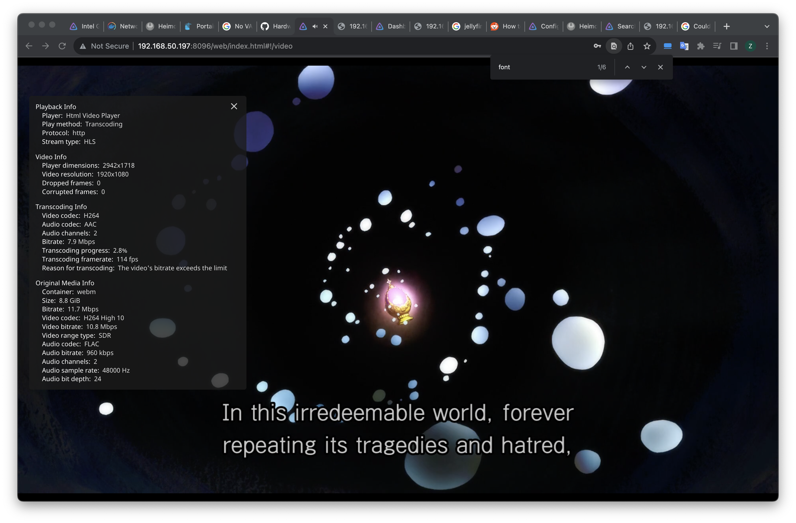
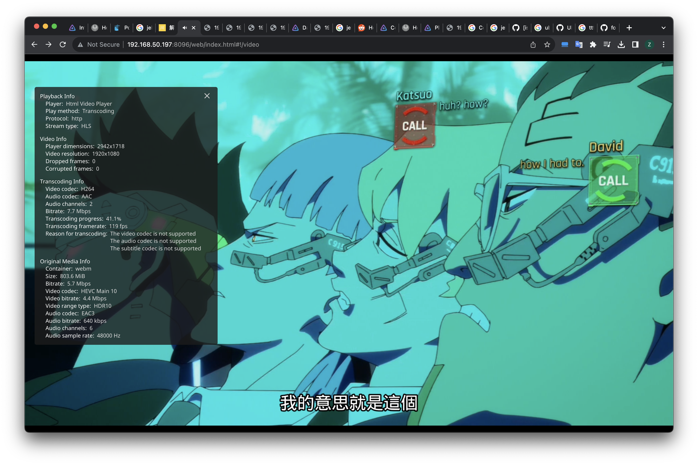
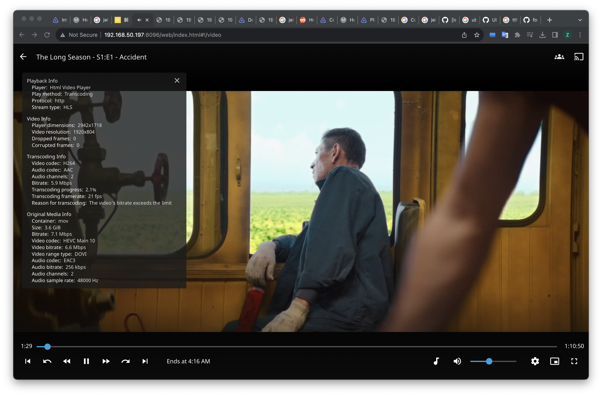
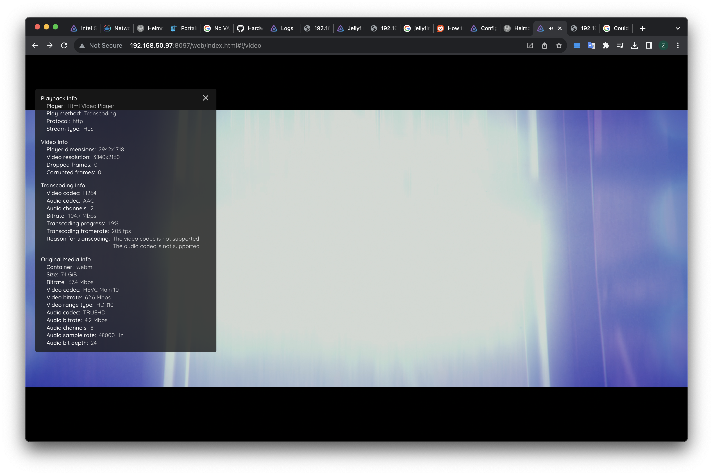

Toward Jellyfin Homeserver: Does CPU and GPU 3D performance matter?
- Just a record of my experiment on these 3 systems.
- Primarily using 4K 120Mbps and “720p” (actually 1080p) 8Mbps presets
- Use HDR tone mapping by default
- Using Defualt CRF of 23 for AVC and 28 for HEVC.
- I prefer subtitle burn-in since it eleminates any subtitle sync issue in browsers. For HDR contents I prefer direct streaming using 3rd party apps to deal with subtitles.
Intel’s latest iGPU’s transcoding performance is impressive, however there’s a myth that encoder and decoder alone determines transcoding efficiency. For me, with morden 4K HDR videos and styled/image subtitles transcoding is in many cases a synthetic workload for CPU, GPU and media engine, especailly for low powered NAS CPUs. Here I have multiple test footages on my NAS transcoded via Jellyfin installed on two setups:
- extremely low powered machine with a 4 E-core Intel N100 CPU, 8GB DDR4 memory and the powerful Intel Gen12 media encoders.
- extremely high powered machine with a 16-Core AMD Ryzen 9 7950X3D CPU, 64GB DDR5 memory and NVIDIA RTX 4090 graphics card, eliminating any possible bottleneck on CPU and GPU 3D engine.
Takeaway
The result is somewhat unexpected, the intel N100 is constantly having its fast media engines underloaded when burning subtitles in Linux, and virtually everywhere in Windows. In Windows ffmpeg process can easily saturate the CPU just pulling files via SMB. On the other hand, the Intel media engine, even fully loaded, is 3-4x slower than the latest NVENC, and that’s only one of the total of 2.
While Intel’s low power iGPU is still my go for always-on home media servers, a beefier setup is certainly useful if you want to serve multiple users simultanously.
For N100
- VAAPI makes no difference
- Low-power encoder is slightly faster
- VPP tone-mapping is useless unless you want that 4W power saving
- Tone mapping and subtitle burning will cause GPU 3D engine bottleneck and impact performance badly.
- Not able to handle 4K in Windows.
For Nvidia Cards
- RTX 4090 could pull over 150W power when transcoding and hit maximium frequency.
- Since there is no 3D and CPU bottleneck, one NVENC should constantly hit full load.
Intel N100 with Intel UHD Graphics, 24EUs@750MHz, Linux
JW4
Bitrate: 67.4Mbps
Purpose: Remux 4K HDR10
4Kto4K, VPP tone mapping, no sub burn-in: ~50fps

4Kto4K, non-VPP tone mapping, no burn-in: 57fps
4Kto4K, VPP tone mapping burin-in: 27fps
- Lower CPU and GPU (both 3D and codec) usage
- ~1W GPU, ~7w CPU power
4Kto4K, non-VPP tone mapping burin-in: 43fps
- ~1.8w GPU, ~10w CPU power
4Kto1080p, subtitle burn-in: 82fps
GunBuster
Bitrate: 11.7Mbps
Purpose: 1080 * 1440 video
Original: ~200fps

1080pto1080p 8Mbps: ~270fps
Mazouku
Bitrate: 3.7Mbps
Purpose: 1080p SDR WEBDL anime, with pre-burnt-in subtitles
Original: ~230fps

Madoka
Bitrate: 11.7Mbps
Purpose: High bitrate Bluray Anime
Original: 117fps
to 8Mbps: 114fps

SW2
Bitrate: 41.5Mbps
Purpose: High Bitrate Bluray 4K HDR10
4Kto4K, sub burn-in: ~50fps

4Kto4K, no subtitle: ~75fps
4Kto1080p 8Mbps, sub burn-in: 94fps
Euphoria
Bitrate: 22.7Mbps
Purpose: High Bitrate HDR10 TV show
4Kto4K, sub burn-in: ~50fps
4Kto4K, no sub: ~70fps
to 1080p 8Mbps, with sub: ~110fps

LongSeason (No subtitle)
Bitrate: 7.1Mbps
Purpose: Low bitrate WEBDL 4K HDR (DV)
4Kto4K: ~55fps (3D engine bottleneck, video render at ~60%)

to 1080p 6Mbps: ~130fps
Cyberpunk
Bitrate: 5.7Mbps
Purpose: 1080p HDR
Original, with sub burn-in: ~120fps
without sub burn-in: ~220fps
Intel N100 with Intel UHD Graphics, 24EUs@750MHz, Windows
Notes
- Windows 11 23H2 fresh install
- New Intel drivers break tone mapping, using driver 5085.
JW4
Bitrate: 67.4Mbps
Purpose: Remux 4K HDR10
4Kto4K, VPP tone mapping, no sub burn-in: ~30fps

4Kto4K, burin-in: 17fps
4Kto1080p, subtitle burn-in: ~40fps
GunBuster
Bitrate: 11.7Mbps
Purpose: 1080 * 1440 video
Original: ~200fps

1080pto1080p 8Mbps: ~210fps
Mazouku
- Bitrate: 3.7Mbps
- Purpose: 1080p WEBDL anime, with pre-burnt-in subtitles
- Original: ~160fps
Madoka
Bitrate: 11.7Mbps
Purpose: High bitrate Bluray Anime
Original, burn-in: 89fps

to 6Mbps: 92fps
SW2
Bitrate: 41.5Mbps
Purpose: High Bitrate Bluray 4K HDR10
4Kto4K, sub burn-in: 24fps
4Kto4K, no subtitle: 36fps
4Kto1080p 8Mbps, sub burn-in: 52fps
Euphoria
Bitrate: 22.7Mbps
Purpose: High Bitrate HDR10 TV show
4Kto4K, sub burn-in: ~20fps
4Kto4K, no sub: ~30fps
to 1080p 8Mbps, with sub: ~50fps
LongSeason (No subtitle)
Bitrate: 7.1Mbps
Purpose: Low bitrate WEBDL 4K HDR (DV)
4Kto4K: 11fps
to 1080p 6Mbps: 21fps

Cyberpunk
Bitrate: 5.7Mbps
Purpose: 1080p HDR
Original, with sub burn-in: 53fps
without sub burn-in: ~100fps
NVIDIA RTX 4090, 16384CUDAs @2835MHz
JW4
Bitrate: 67.4Mbps
Purpose: Remux 4K HDR10
4Kto4K, tone mapping, no sub burn-in: ~200fps
4Kto1080p, subtitle burn-in: ~240fps
GunBuster
Bitrate: 11.7Mbps
Purpose: 1080 * 1440 video
1080pto1080p: ~800fps

1080pto1080p 8Mbps: ~900fps
Mazouku
- Bitrate: 3.7Mbps
- Purpose: 1080p WEBDL anime, with pre-burnt-in subtitles
- Original: 837fps
Madoka
- Bitrate: 11.7Mbps
- Purpose: High bitrate Bluray Anime
- Original, burn-in: ~650fps
- to 6Mbps: ~700fps
SW2
Bitrate: 41.5Mbps
Purpose: High Bitrate Bluray 4K HDR10
4Kto4K, sub burn-in: ~250fps
4Kto4K, no subtitle: ~260fps
4Kto1080p 8Mbps, sub burn-in: ~400fps
Euphoria
Bitrate: 22.7Mbps
Purpose: High Bitrate HDR10 TV show
4Kto4K, sub burn-in: ~250fps
4Kto4K, no sub: ~260fps
to 1080p 8Mbps, with sub: ~300fps
LongSeason (No subtitle)
Bitrate: 7.1Mbps
Purpose: Low bitrate WEBDL 4K HDR (DV)
4Kto4K: 370fps
to 1080p 6Mbps: 710fps
Cyberpunk
Bitrate: 5.7Mbps
Purpose: 1080p HDR
Original, with sub burn-in: 860fps
without sub burn-in: 910fps
This article uses CC BY-SA 4.0 License. You may need to give appropriate credit, provide a link to the license, and indicate if changes were made when referencing this article.